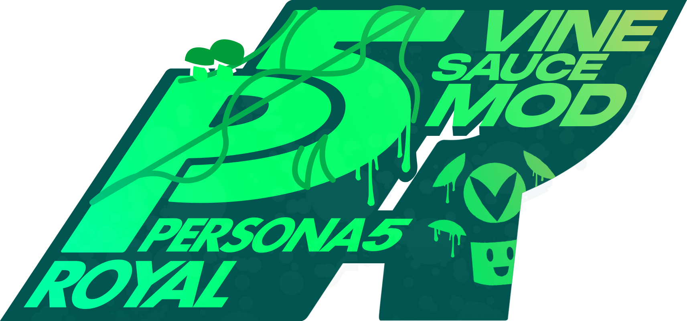

Join us in commemorating several years of fun and hilarious Vinesauce streams.
Experience P5R game like never before with new art, models, music, and tons of
easter eggs from Vinny’s past broadcasts.
Vinesauce is a group of variety streamers on Twitch, as well as the username of their first streamer, Vinny. His stream's gimmick is corruptions-- dismantling classic games by randomly editing RAM while playing. He's also known for his music, his commentary, and the community surrounding his streams.
A running gag during Vinny's streams is that chat members will request that he play a Persona game, despite him having no interest in the franchise. Although this mod does not make it any more likely that he will change his mind, fans of his streams are sure to appreciate the irony.
Since the Custom Bonus Tweaks mod only exists for PC, PS4 and Switch players will miss out on extra content such as certain voice clips, BGM, and costumes. There is also no mod to change the background color on other platforms, so the pause menu will remain red instead of green.